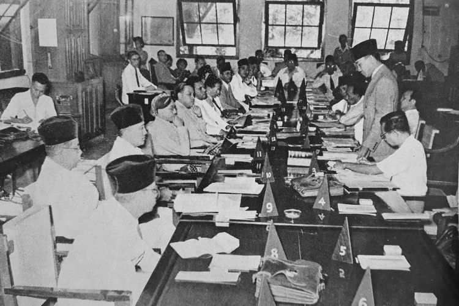

Sejarah PPKI: Latar Belakang, Tujuan, Anggota dan Sidangnya
 Panitia Persiapan Kemerdekaan Indonesia atau PPKI adalah panitia yang bertugas untuk mempersiapkan kemerdekaan Indonesia. Panitia ini dibentuk pada tanggal 7 Agustus 1945 untuk menggantikan Badan Penyelidik Usaha-Usaha Persiapan Kemerdekaan (BPUPK), serta diketuai oleh Ir. Soekarno. Izin pembentukan badan ini diberikan oleh Hisaichi Terauchi, seorang marsekal Jepang yang berada di Saigon.Badan ini dibentuk sebelum MPR ada.
Latar Belakang PPKI
PPKI dibentuk pada tanggal 7 agustus 1945 tepat setelah BPUPKI dibubarkan. Kepanjangan dari PPKI ialah Panitia Persiapan Kemerdekaan Indonesia atau dalam bahasa jepangnya Dokuritsu Junbi Inkai. PPKI mempunyai kewajiban yakni meneruskan hasil pekerjaan dari BPUPKI sehabis BPUPKI dibubarkan oleh Jepang bertepatan pada tanggal 7 agustus 1945. PPKI awal mula pembentukan PPKI, PPKI memiliki 21 anggota, tetapi tanpa sepengetahuan pemerintah Jepang, PPKI diam-diam menambahkan 6 orang anggota lagi. PPKI ditetapkan pada tanggal 9 Agustus 1945 di Kota Ho CHi Minh, Vietnam oleh Jenderal Terauchi. Peresmian itu dihadiri oleh Ir. Soekarno, Drs. Mohammad Hatta serta Dr. radjiman Wedyodiningrat. Tujuan dibentuknya PPKI ialah agar menarik belas kasih golongan ataupun tokoh-tokoh penting di Indonesia agar mau menolong Jepang dalam perang Pasifik yang terjadi pada tahun 1943. Pada saat itu Jepang menjanjikan untuk berikan kebebasan pada Indonesia lewat kesepakatan Kyoto. Badan ini menyelenggarakan berbagai sidang guna mencapai tujuan dari PPKI tersebut. Berbeda halnya dengan Tujuan BPUPKI yang masih ada capur tangan dari pemerintahan jepang, PPKI justru sudah lepas dari campur tangan pemerintahan jepang. Setelah selesai melaksanakan tugas dengan baik dan berhasil mewujudkan kemerdekaan indonesia maka PPKI resmi dibubarkan tepat pada tanggal 29 Agustus 1945. Pembubaran PPKI berbarengan dengan pembuatan serta inaugurasi Panitia Nasional Indonesia Pusat serta Provinsi buat meneruskan konsep aturan pemerintahan berikutnya.Tujuan PPKI
Tujuan pembentukan PPKI adalah untuk melanjutkan tugas BPUPKI dalam mempersiapkan rencana pergerakan proklamasi kemerdekaan. Adapun tujuan PPKI yang paling utama adalah mempersiapkan kemerdekaan Indonesia. Selain itu, PPKI dibentuk untuk melakukan tata negara dan membuat struktur kenegaraan. Tujuan pembentukan PPKI ini tidak lain untuk mewujudkan Indonesia sebagai negara yang merdeka dan berdaulat.Anggota PPKI
PPKI terdiri dari 21 orang, yaitu 12 orang merupakan perwakilan dari Jawa, tiga orang dari Sumatra, dua orang dari Sulawesi, satu orang dari Kalimantan, satu orang Nusa Tenggara, dua orang dari Maluku, dan satu orang lagi perwakilan dari golongan etnis Tionghoa. Anggotaan PPKI: Ketua PPKI: Ir. Soekarno Wakil Ketua PPKI: Drs. Moh. Hatta Anggota PPKI: Prof. Mr. Dr. Soepomo KRT Radjiman Wedyodiningrat R. P. Soeroso Soetardjo Kartohadikoesoemo Kiai Abdoel Wachid Hasjim Ki Bagus Hadikusumo Otto Iskandardinata Abdoel Kadir Pangeran Soerjohamidjojo Pangeran Poerbojo Dr. Mohammad Amir Mr. Abdul Maghfar Teuku Mohammad Hasan Dr. GSSJ Ratulangi Andi Pangerang A.A. Hamidhan I Goesti Ketoet Poedja Mr. Johannes Latuharhary Drs. Yap Tjwan BingSidang-Sidang PPKI
Sidang Pertama 18 Agustus 1945 PPKI
Mengesahkan UUD 1945 beserta pembukaannya. Mengganti sila pertama pancasila dari kalimat 'Ketuhanan dengan kewajiban menjalankan syariat Islam bagi pemeluk-pemeluknya' diganti menjadi 'Ketuhanan yang Maha Esa'. Mengangkat Ir. Soekarno sebagai presiden dan Moh. Hatta sebagai wakil presiden RI atas usulan Otto Iskandardinata secara aklamasi. Membentuk Komite Nasional, komite nasional ini berfungsi membantu tugas presiden sebelum dibentuknya MPR dan DPR.Sidang Kedua 19 Agustus 1945 PPKI
Membagi Indonesia menjadi delapan provinsi yaitu Sumatra, Jawa Barat, Jawa Tengah, Jawa Timur, Sunda Kecil, Maluku, Sulawesi, dan Kalimantan dengan masing-masing provinsi dipimpin oleh seorang gubernur sebagai kepala daerah. Membentuk 12 Kementerian dan empat Menteri Negara. Membentuk Komite Nasional Daerah. Membentuk Tentara Rakyat Indonesia (TRI) yang diambil dari tentara Heiho dan Peta. Memasukkan kepolisian dalam departemen dalam negeri.Sidang Ketiga 22 Agustus 1945 PPKI
Menetapkan Komite Nasional Indonesia Pusat (KNIP), dengan 137 anggota dari golongan muda dan masyarakat. Membentuk Partai Nasional Indonesia (PNI), diketuai oleh Ir. Soekarno. Membentuk Badan Keamanan Rakyat (BKR), fungsi BKR yaitu menjaga keamanan umum bagi masing-masing daerah.